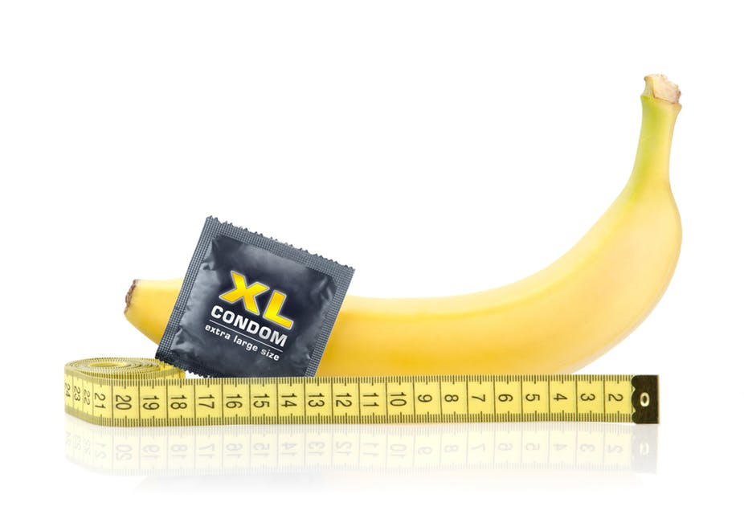

Unde să întâlnesc o fată? Desigur, pe internet! Pe stradă, ea poate trece pe lângă tine, deoarece nu este gata pentru comunicare reală, dar în lumea virtuală, șansele de succes cresc exponențial. Mai ales în același Tinder, puteți alege un partener după parametrii dvs., mai degrabă decât „juca ruleta” când vă întâlniți într-un bar. Fetele, apropo, preferă comunicarea virtuală înainte relații sexuale, astfel încât să nu existe surprize mici.
După ce v-ați cunoscut, ar trebui să existe o întâlnire reală și dacă ai reușit să impresionezi, după 2-3 întâlniri (sau poate la prima), fata este gata pentru relații sexule. Și cel mai important lucru este să nu dai greș.

Cu cât penisul unui bărbat este mai mare, cu atât mai mult și mai puternic durează orgasmul nu numai al tău, ci și al ei. Probabil, de aceea,cheia succesului în rândul fetelor este dimensiunea penisului, nu portofelul. Acest lucru este confirmat de interogările din motoarele de căutare, în cazul în care publicul feminin selectează videoclipuri și fotografii cu penisurimari și groși.
Ce să facă dacă natura nu a acordat o dimensiune impresionantă?
Nu vă faceți griji, să măriți penisul și adăugați mai multă căldură sexului este mai mult decât real. Iată sunt cele mai populare opțiuni:
Prima - este operație
Costul e de la 20.000 la 50.000$
Cum se derulează?
În prima etapă, se taie ligamentul, care se află între osul pubian și țesuturile penisului. În cea de-a doua etapă, se instalează un extender - dispozitiv pe balamale, care este fixat și crește treptat tracțiunea. Timp de șase luni sau un an, puteți mări penisul cu 2-3 centimetri. Grosimea crește, de asemenea. E o tehnică destul de scumpă și dureroasă, cu multe contraindicații (inclusiv abstinența prelungită de la sex). Există riscul unor complicații grave, inclusiv pierderea sensibilității și impotența.


A doua – pompe și exerciții
Costul e de la 500 la 2 000$
Pompe. Efectul mecanic asupra penisului provoacă o creștere a sângelui și o ușoară umflătură, de aceea, pentru un timp penisul pare mai mare. Dar trece repede. Dacă utilizați frecvent pompe, puteți deteriora țesuturile penisului, astfel încât să se deformeze sau să înceapă probleme cu erecția.
Exerciții. Tehnica Jelking este un astfel de masaj de la baza penisului la cap cu ejaculare întârziată. Ca și în cazul altor metode-DIY de mărire, exercițiile nu au dovezi de funcționalitate, iar complicațiile sunt: durere și deformare. Și pentru a nu vă răni, aveți nevoie de sfaturi de la un specialist care nu este atât de ușor de găsit.
A treia – pastile
Costul e de la 500 la 3 000$

Pastilele pentru mărirea penisului sunt aditivi alimentari dintr-un amestec de vitamine, plante și hormoni. Nici un astfel de mijloc nu schimbă dimensiunea penisului – acesta este doar un joc pe încrederea celor disperați. În plus, acestea nu sunt înregistrate ca medicamente, ceea ce înseamnă că nimeni nu le controlează producția. Prin urmare, nu se știe ce este de fapt într-o pastilă (bine, dacă nimic). Dar, din păcate, cel mai adesea acesta este un amestec sălbatic de hormoni și Sildenafil, ceea ce crește riscul de numeroase boli cardiovasculare și chiar atacuri de cord. Asta dacă ai niţel noroc.
A patra - geluri și lubrifianți
Costul e de la 5 la 500$
Cea mai bugetară, dar cea mai sigură și mai eficientă opțiune. Dar aici trebuie să fii atent și să știi ce să iei. Pe internet și sex shop, puteți cumpăra un lubrifiant de care poate fi o arsură chimică. Și pentru a evita acest lucru, vă vom spune despre un produs nou pentru mărirea penisului - gel-lubrifiant .

De ce anume ? Acesta este primul gel intim bazat pe substanțe solubile în apă care stimulează creșterea penisului prin extinderea venelor și a corpurilor cavernoase.
S-a dovedit că
dacă stimulați în mod regulat circulația sângelui și creșteți presiunea în interiorul penisului, atunci acesta va deveni nu numai mai mare, ci și mai gros
În asta te va ajuta . Primul lucru pe care ar trebui să acorde o atenție este compoziția:
- acidul hialuronic – contribuie la prelungirea și creșterea senzațiilor plăcute în timpul contactului sexual;
- extractul de mentă – face penisul mai sensibil, crește potența;
- extractul de mușețel – ajută țesuturile penisului să devină mai elastice și mai largi;
- cofeina – promovează saturarea celulelor cu oxigen, ceea ce sporește fluxul sanguin și penisul începe să crească în mod natural.
Cu un astfel de set impresionant de ingrediente, producătorii de gel asigură că într-o lună, penisul tău va mări cu 5 cm. Vei uita ce este sexul rapid și plictisitor.
Avantajele includ absența hormonilor, siguranța, și este ușor de utilizat. Oferă o penetrare mai profundă și, de asemenea, o excitare pentru tine și partenera ta.
Cum să devii un guru de sex
E ca și cum ai câștiga la loterie sau ai scoate singurul bilet învățat la examen. Cu un penis mare nu are nevoie de nici un efort. După ce ai aflat despre dimensiunea ta impresionantă, orice puritana este gata să organizeze un spectacol sexual demonstrativ, care ar fi invidiat de porno-staruri.
Visezi la fel? Apoi, ia , stoarce-l cu îndrăzneală pe penis și începe să faci un masaj simplu de la bază la capul penisului.

Cu utilizarea zilnică, rezultatele vor fi după cum urmează:
- 7-10 zile: penisul va mări cu 1 cm și sensibilitatea va crește;
- 20 de zile: sexul va fi de 2 ori mai LUNG și mai plăcut, deoarece penisul a crescut deja cu 3 cm;
- 30 de zile: o erecție puternică, orgasme prelungite și un penis mare (creștere de până la 5 cm în lungime și până la 3 cm în lățime).
Dacă se pare că ai încercat deja totul, iar rezultatul este zero, este timpul să încerci . O să-i placă SCHIMBĂRILE MARI.
trebuie să încerc, mi-ar prinde bine câțiva centimetri))
și eu testez . Penisul a crescut cu 5 cm, nu mai crește și nu mai am nevoie, soția deja se plânge că a devenit prea mare. Pentru a fi erect este, de asemenea, un remediu normal. l-am uns și în luptă pe două ore. Pe scurt, acum rezist și soția mea și încă două amante.
Ei bine, dacă este într-adevăr un remediu efectiv, atunci este o bombă. Ei bine, eu nu trebuie să mă deranjez, natura mi-a oferit 19 cm.
Prietenul meu îl folosește, apropo, chiar eu i-am cumpărat. Avea un penis de 12 cm, nu mi-a fost de ajuns și i-am spus direct despre asta. Și după ce el a încercat , a devenit deja 18 cm! este chiar mai mult decât la fostul meu)) Acum sunt mulțumită de tot.
Recent am aflat despre , dar cumva mi-a fost frică să comand, m-am gândit, că am ajuns la divorț. Acum îl folosesc deja de o săptămână, + 1 cm. Dacă merge așa, peste două luni voi avea o mărime foarte bună.
Iar penisul trebuie să se întindă cumva? Dacă nu, care este mărire minimă pe lună?
Apropo, de asemenea, m-am uns cu , nu am întins nimic, pentru o lună am avut + 3 cm.
Nu există senzații dureroase sau disconfort cu creșterea penisului? Totuși, țesăturile se întind.
Totul e în regulă, nu-ți fie frică. Eu am folosit doar ca un lubrifiant, dar s-a dovedit a fi un bonus mișto - penisul a crescut.
Aproape că am decis să-mi fac operație, așa că m-am săturat de 11 cm ai mele. Voi comanda , poate că mă va ajuta
Am un prieten care a făcut o operație de mărire a penisului. Acum, penisul nu se ridică deloc…
Da, există astfel de efecte secundare de la operație, am auzit. În general, există un mecanism foarte complex, aici tăie, acolo elimină, aici adaugă. Da, și de ce să plătești mai mult dacă este într-adevăr eficient, și poți face imediat relații sexuale și să nu te abții timp de câteva luni.